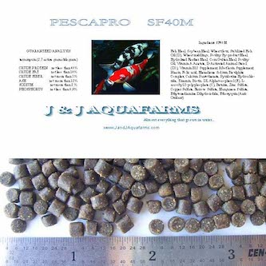

FF45
Cichlid Titanium Fish Pellets - 3 lb
- 45% protein
- 1.5 mm (<1/16") floating pellet
- For top and center-feeding fish 1" to 6" - Fresh or saltwater
- Extruded pellets initially float, then sink slowly
- For sinking cichlid food CR48 or SF45
FF45B
Cichlid Titanium Fish Pellets - Bulk 11 lb
- 45% protein
- 1.5 mm (<1/16") floating pellet
- For top and center-feeding fish 1" to 6" - Fresh or saltwater
- Extruded pellets initially float, then sink slowly
- For sinking cichlid food CR48 or SF45

FF35 1/8
Floating Koi & Tropical Pellets 1/8" - 3 lb
- 35% protein
- 3.5 mm (1/8") floating pellet
- Excellent diet for medium to large tropicals like Arawana, Pacu, Oscar
- For top-feeding koi and tropical fish 4 to 12 inches
FF35B 1/8
Floating Koi & Tropical Pellets 1/8" - Bulk 8 lb
- 35% protein
- 3.5 mm (1/8") floating pellet
- Excellent diet for medium to large tropicals like Arawana, Pacu, Oscar
- For top-feeding koi and tropical fish 4 to 12 inches
FF35BB 1/8
Floating Koi & Tropical Pellets 1/8" - Big Box 13 lb
- 35% protein
- 3.5 mm (1/8") floating pellet
- Excellent diet for medium to large tropicals like Arawana, Pacu, Oscar
- For top-feeding koi and tropical fish 4 to 12 inches
FF35B 1/4
Floating Koi Pellets 1/4" - Bulk 8 lb
- 35% protein
- 5.5 mm (1/4") floating pellet
- Excellent diet for larger tropicals like Arawana, Pacu, Oscar
- For koi and tropical fish 8 to 36 inches
FF35BB 1/4
Floating Koi Pellets 1/4" - Big Box 12 lb
- 35% protein
- 5.5 mm (1/4") floating pellet
- Excellent diet for larger tropicals like Arawana, Pacu, Oscar
- For koi and tropical fish 8 to 36 inches

SF40M
Medicated Sinking Pellets - 3 lb
- 40% protein
- 5 mm diameter
- For lethargic or bottom feeding fish
- Treats three 18" koi or tropical fish
SF40MBB
Medicated Sinking Pellets - Big Box 20 lb
- 40% protein
- 5 mm diameter
- For lethargic or bottom feeding fish
- Treats twenty 18' koi or 80 10" koi
SO Med
Medicated Pellets Special Order - 9 to 11 lb
- Any >1.0 mm feed medicated with terramycin
- 1/16" FF45, 1/8" SF45, SF45-3.0

FF35M 1/4
Medicated Floating Pellets 1/4"- 2 lb
- 35% protein
- 5.5 mm (1/4") pellets
- For top feeding fish
- Treats two 18" koi
- Email us if you want this in 1/8"
FF35MB 1/4
Medicated Floating Pellets 1/4"- Bulk 12 lb
- 35% protein
- 5.5 mm (1/4") pellets
- For top feeding fish
- Treats eight 18" koi
FF35MB 1/8
Medicated Floating Pellets 1/8"- Bulk 13 lb
- 35% protein
- 3.5 mm (1/8") pellets
- For top feeding fish
- Treats eight 18" koi
CR52M
Fry and Small Fish Mash Plankton Subsitute - 2 lb
- Limited availability, please contact us
- 52% protein
- Finely ground 0.25 mm (<1/64") particles
- Excellent as a plankton subsitute for newly-hatched fry (to 1/2 inch)
- Stays suspended in the water column like natural plankton. Will make aquarium water appear cloudy for an hour or so
- Make your own CR52M from CR52S with a small coffee grinder

CR52S
Fry and Small Fish Starter - 2 lb
- 52% protein
- 0.5 mm (<1/32") particles
- Excellent as a growth ration for one-week old and up fry (to 1")
- Does not "cloud" the water like the mash does. Food particles stay intact and suspended in the water column for smaller fry and tropical fish to find.
- SPECIAL! 3rd pound ships free! (ask for adjustment on invoice)

SF40
40% Koi Growth Sinking Pellets - 3 lb
- 40% protein
- 5 mm (3/16") diameter
- Excellent growth and conditioning for koi and tropicals
- For bottom-feeding fish over 4 inches
- Extruded pellets do not disintegrate
SF40B
40% Koi Growth Sinking Pellets - Bulk 13 lb
- 40% protein
- 5 mm (3/16") diameter
- Excellent growth and conditioning for koi and tropicals
- For bottom-feeding koi and fish over 6 inches
- Great for winterizing pond fish
- Extruded pellets do not disintegrate
SF40BB
40% Koi Growth Sinking Pellets - Bulk 20 lb
- 40% protein
- 5 mm (3/16") diameter
- Excellent growth and conditioning for koi and tropicals
- For bottom-feeding koi and fish over 6 inches
- Great for winterizing pond fish
- Extruded pellets do not disintegrate

SF45L
45% Koi Rapid-Gro Pellets - 3 lb
- 45% protein
- 6 mm (1/4") diameter
- Excellent growth and conditioning for koi and tropicals
- For bottom-feeding fish over 6 inches
- Extruded pellets do not disintegrate
SF45LB
45% Koi Rapid-Gro Pellets - Bulk 20 lb
- 45% protein
- 6 mm (1/4") diameter
- Excellent growth and conditioning for koi and tropicals
- For bottom-feeding fish over 6 inches
- Extruded pellets do not disintegrate

SF45
Cichlid Gold Sinker - 3 lb
- 45% protein
- 2 mm (3/32") diameter
- Cichlid , Koi, tropical, saltwater fish 1" to 6"
- Extruded pellets do not disintegrate
- Best for carnivorous/omnivorous fish at all water depths
SF45B
Cichlid Gold Sinker - Bulk 11 lb
- 45% protein
- 2 mm (3/32") diameter
- Cichlid , Koi, tropical, saltwater fish 1" to 6"
- Extruded pellets do not disintegrate
- Best for carnivorous/omnivorous fish at all water depths

SF45-3.0
Cichlid Platinum Sink 3.0 - 3 lb
- 45% protein
- 3.0 mm (1/8") diameter
- Cichlid , Koi, tropical, saltwater fish 3" to 10"
- Extruded pellets do not disintegrate
- Best for carnivorous/omnivorous fish at all water depths
SF45B-3.0
Cichlid Platinum Sink 3.0 - Bulk 11 lb
- 45% protein
- 3.0 mm (1/8") diameter
- Cichlid , Koi, tropical, saltwater fish 3" to 10"
- Extruded pellets do not disintegrate
- Best for carnivorous/omnivorous fish at all water depths